Bowling et al., 2020ÔÉÅ
An Engineered CRISPR-Cas9 Mouse Line for Simultaneous Readout of Lineage Histories and Gene Expression Profiles in Single Cells
[1]:
import scanpy as sc
import numpy as np
import operator
import pandas as pd
import torch.nn.functional as F
import torch.nn as nn
import scanpy as sc
import matplotlib.pyplot as plt
import torch
import os
#setPltLinewidth(0)
# os.environ["CUDA_VISIBLE_DEVICES"] = "1,2,6,7"
from torch.nn import DataParallel
import os
import anndata as ad
import cospar as cs
import scanpy as sc
def createFig(figsize=(8, 4)):
fig,ax=plt.subplots()
ax.spines['right'].set_color('none')
ax.spines['top'].set_color('none')
#ax.spines['bottom'].set_color('none')
#ax.spines['left'].set_color('none')
for line in ax.yaxis.get_ticklines():
line.set_markersize(5)
line.set_color("#585958")
line.set_markeredgewidth(0.5)
for line in ax.xaxis.get_ticklines():
line.set_markersize(5)
line.set_markeredgewidth(0.5)
line.set_color("#585958")
ax.set_xbound(0,10)
ax.set_ybound(0,10)
fig.set_size_inches(figsize)
return fig,ax
def setPltLinewidth(linewidth:float):
mpl.rcParams['axes.linewidth'] = linewidth
import matplotlib as mpl
fig,ax=createFig()
fig.set_size_inches(5,5)
mpl.rcParams['pdf.fonttype'] = 42
mpl.rcParams['ps.fonttype'] = 42
setPltLinewidth(1)
plt.rcParams['figure.dpi'] = 300
plt.rcParams['savefig.dpi'] = 300
plt.rcParams['font.size'] = 14
plt.rcParams['axes.linewidth'] = 1

[24]:
from math import sqrt
import torch
import torch.nn as nn
num_relations=3
len_geneExp=1646
len_embedding=256
learning_rate=0.000123
num_epoch=10
batchsize=512
class SELayer(nn.Module):
def __init__(self, channel, reduction=16):
super(SELayer, self).__init__()
self.avg_pool = nn.AdaptiveAvgPool1d(1)
self.fc = nn.Sequential(
nn.Linear(channel, channel // reduction, bias=False),
nn.LeakyReLU(inplace=False),
nn.Linear(channel // reduction, channel, bias=False),
nn.Sigmoid()
)
def forward(self, x):
b, c, _ = x.size()
#print('channel:',c)
#print('size:',x.shape)
y = self.avg_pool(x).view(b, c)
y = self.fc(y).view(b, c, 1)
#print('y_size:',y.shape)
return x * y.expand_as(x)
class MutiheadAttention(nn.Module):
def __init__(self, input_dim, dim_k, dim_v,num_heads):
super(MutiheadAttention, self).__init__()
self.dim_q = dim_k
self.dim_k = dim_k
self.dim_v = dim_v
self.num_units=dim_k
self.num_heads=num_heads
self.linear_q = nn.Linear(input_dim, dim_k, bias=False)
self.linear_k = nn.Linear(input_dim, dim_k, bias=False)
self.linear_v = nn.Linear(input_dim, dim_v, bias=False)
self._norm_fact = 1 / sqrt(dim_k)
def forward(self, x):
# x: batch_size, seq_len, input_dim
q = self.linear_q(x) # batch_size, seq_len, dim_k
k = self.linear_k(x) # batch_size, seq_len, dim_k
v = self.linear_v(x) # batch_size, seq_len, dim_v
split_size = self.num_units // self.num_heads
q = torch.stack(torch.split(q, split_size, dim=2), dim=0) # [h, N, T_q, num_units/h]
k = torch.stack(torch.split(k, split_size, dim=2), dim=0) # [h, N, T_k, num_units/h]
v = torch.stack(torch.split(v, split_size, dim=2), dim=0) # [h, N, T_k, num_units/h]
scores = torch.matmul(q, k.transpose(2, 3))
scores = scores / (self.dim_k ** 0.5)
scores = F.softmax(scores, dim=3)
## out = score * V
out = torch.matmul(scores, v) # [h, N, T_q, num_units/h]
out = torch.cat(torch.split(out, 1, dim=0), dim=3).squeeze(0)
return out
class ResidualBlock(torch.nn.Module):
def __init__(self,channels):
super(ResidualBlock,self).__init__()
self.channels = channels
self.conv1 = nn.Conv1d(channels,channels,kernel_size=3,padding=1)
self.conv2 = nn.Conv1d(channels,channels,kernel_size=3,padding=1)
self.se=SELayer(channels,16)
def forward(self, x):
y = F.relu(self.conv1(x))
y = self.conv2(y)
y=self.se(y)
return F.relu(x+y)
class CNN(nn.Module):
def __init__(self):
nn.Module.__init__(self)
self.att=MutiheadAttention(len_embedding*2,512,512,64)
self.layernorm=nn.LayerNorm(512)
self.conv1 = nn.Conv1d(1, 32, 4)
self.relu1=nn.LeakyReLU(0.2, inplace=True)
self.rblock1 = ResidualBlock(32)
self.conv2 = nn.Conv1d(32,64, 4)
self.batchn1=nn.BatchNorm1d(64)
self.relu2= nn.LeakyReLU(0.2, inplace=True)
self.rblock2 = ResidualBlock(64)
self.conv3=nn.Conv1d(64,128,4)
self.batchn2=nn.BatchNorm1d(128)
self.relu3= nn.LeakyReLU(0.2, inplace=True)
self.rblock3 = ResidualBlock(128)
self.conv4=nn.Conv1d(128,256,4)
self.batchn3=nn.BatchNorm1d(256)
self.relu4= nn.LeakyReLU(0.2, inplace=True)
self.rblock4 = ResidualBlock(256)
self.dropout=nn.Dropout()
self.fc1 = nn.Linear(7424, num_relations)
def forward(self, x):
x=self.att(x)+x
x=self.layernorm(x)
x = self.conv1(x)
x = self.relu1(x)
x = F.max_pool1d(x, 2)
x=self.rblock1(x)
x = self.conv2(x)
x=self.batchn1(x)
x=self.relu2(x)
x = F.max_pool1d(x, 2)
x=self.rblock2(x)
x = self.conv3(x)
x=self.batchn2(x)
x=self.relu3(x)
x = F.max_pool1d(x, 2)
x=self.rblock3(x)
x = self.conv4(x)
x=self.batchn3(x)
x=self.relu4(x)
x = F.max_pool1d(x, 2)
x=self.rblock4(x)
x = x.view(x.size()[0], -1)
x=self.dropout(x)
x=self.fc1(x)
return x
geneEnc=nn.Sequential(
nn.Dropout(),
nn.Linear(len_geneExp, 100),
nn.ReLU(),
nn.Linear(100, 100),
nn.ReLU(),
nn.Linear(100, 100),
nn.ReLU(),
nn.Linear(100, 100),
nn.ReLU(),
nn.Linear(100, len_embedding),
)
geneDec = nn.Sequential(
nn.Linear(len_embedding, len_geneExp),
#nn.Linear(512, len_geneExp),
)
genemap = nn.Sequential(
#nn.Dropout(),
nn.Linear(len_embedding, 100),
nn.BatchNorm1d(100),
nn.ReLU(),
nn.Linear(100, 100),
nn.BatchNorm1d(100),
nn.ReLU(),
nn.Linear(100, 100),
nn.BatchNorm1d(100),
nn.ReLU(),
nn.Linear(100, 100),
nn.BatchNorm1d(100),
nn.ReLU(),
nn.Linear(100, len_embedding),
)
model=CNN()
device = torch.device("cuda:6")
device2 = torch.device("cuda:6")
path='/home/zhengtuo/songtao/dynamic1.pth'
pretrained_weights = torch.load(path)
model.load_state_dict(pretrained_weights['model'])
geneEnc.load_state_dict(pretrained_weights['geneEnc'])
genemap.load_state_dict(pretrained_weights['genemap'])
geneDec.load_state_dict(pretrained_weights['geneDec'])
model.to(device2)
geneEnc.to(device2)
geneDec.to(device2)
genemap.to(device2)
genemap.eval()
model.eval()
geneEnc.eval()
geneDec.eval()
[24]:
Sequential(
(0): Linear(in_features=256, out_features=1646, bias=True)
)
[3]:
def ScanpyVolcanoPlot(adata, axis, use_adjusted_p=True, show_label=True, label_fold_change=2, label_log_p=80, add_grid=True, label_size=4, filter_labels=None, kept_labels=None, color1='#F09D30', color2='#3D5FA6', label_excludes=None):
fig, ax = createFig()
names = list(map(lambda x: x[axis], adata.uns['rank_genes_groups']['names']))
log2foldchanges = list(map(lambda x: x[axis], adata.uns['rank_genes_groups']['logfoldchanges']))
if use_adjusted_p:
log10adjp = -np.log10(list(map(lambda x: x[axis], adata.uns['rank_genes_groups']['pvals_adj'])))
else:
log10adjp = -np.log10(list(map(lambda x: x[axis], adata.uns['rank_genes_groups']['pvals'])))
# Filter out excluded genes
if label_excludes is not None:
include_indices = [i for i, name in enumerate(names) if name not in label_excludes]
log2foldchanges = [log2foldchanges[i] for i in include_indices]
log10adjp = [log10adjp[i] for i in include_indices]
names = [names[i] for i in include_indices]
ax.scatter(
x=log2foldchanges,
y=log10adjp,
s=12,
alpha=0.8,
linewidth=0,
c=list(map(lambda x: color2 if abs(x[0]) > label_fold_change and x[1] > label_log_p and x[0] < 0
else color1 if abs(x[0]) > label_fold_change and x[1] > label_log_p and x[0] > 0
else 'gray', zip(log2foldchanges, log10adjp)))
)
if add_grid:
ax.axvline(-label_fold_change, color ="black", alpha = 0.8, lw = 0.8, ls='--')
ax.axvline(label_fold_change, color ="black", alpha = 0.8, lw = 0.8, ls='--')
ax.axhline(label_log_p, color ="black", alpha = 0.8, lw = 0.8, ls='--')
ax.grid(alpha=0.4)
if show_label:
indices = list(map(lambda x: abs(x[0]) > label_fold_change and x[1] > label_log_p, zip(log2foldchanges, log10adjp)))
for i, j, s in zip(np.array(log2foldchanges)[indices], np.array(log10adjp)[indices], np.array(names)[indices]):
if label_excludes is not None and s in label_excludes:
continue
if filter_labels is not None and s in filter_labels:
continue
if kept_labels is not None and s not in kept_labels:
continue
ax.text(i, j, s=s, size=label_size)
return fig, ax
[34]:
adata=cs.hf.read('/home/zhengtuo/songtao/9.20_carlin_withprob.h5ad')
[35]:
adata.obs['preference_HSC'].value_counts()
[35]:
Ery 207
My 179
Name: preference_HSC, dtype: int64
[32]:
#bowling_adata_=cs.hf.read("/home/zhengtuo/songtao/dynamic.h5ad")
[37]:
dic1={'Mo':'My','Neu':'My','Mk':'Ery','HSC':'HSC'}
adata.obs['reannotation']=adata.obs['reannotation'].map(dic1)
adata.obs['reannotation'].unique()
[37]:
array(['Ery', 'HSC', 'My'], dtype=object)
[38]:
fig,ax=createFig((5,5))
sc.pl.umap(adata, color='reannotation', palette = {
"Ery": "#2B9E44",
"My": "#289E9E",
"HSC": '#E6DCD9'
}, s=32, ax=ax)
/home/zhengtuo/miniconda3/lib/python3.9/site-packages/scanpy/plotting/_tools/scatterplots.py:392: UserWarning: No data for colormapping provided via 'c'. Parameters 'cmap' will be ignored
cax = scatter(
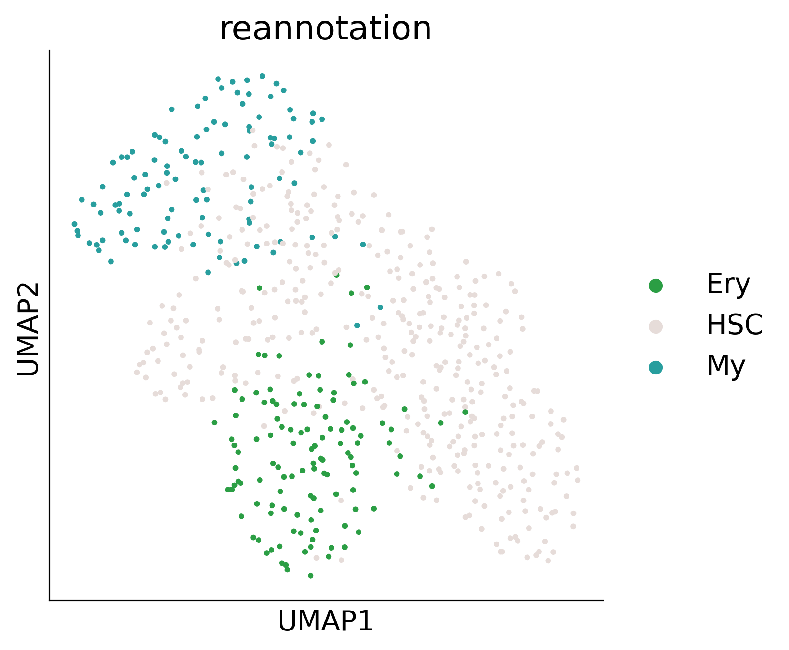
[ ]:
[39]:
fig,ax=createFig((5,5))
sc.pl.umap(adata, color='preference_HSC', palette = {
"Ery": "#2B9E44",
"My": "#289E9E",
"HSC": '#E6DCD9'
}, s=32, ax=ax)
/home/zhengtuo/miniconda3/lib/python3.9/site-packages/scanpy/plotting/_tools/scatterplots.py:392: UserWarning: No data for colormapping provided via 'c'. Parameters 'cmap' will be ignored
cax = scatter(
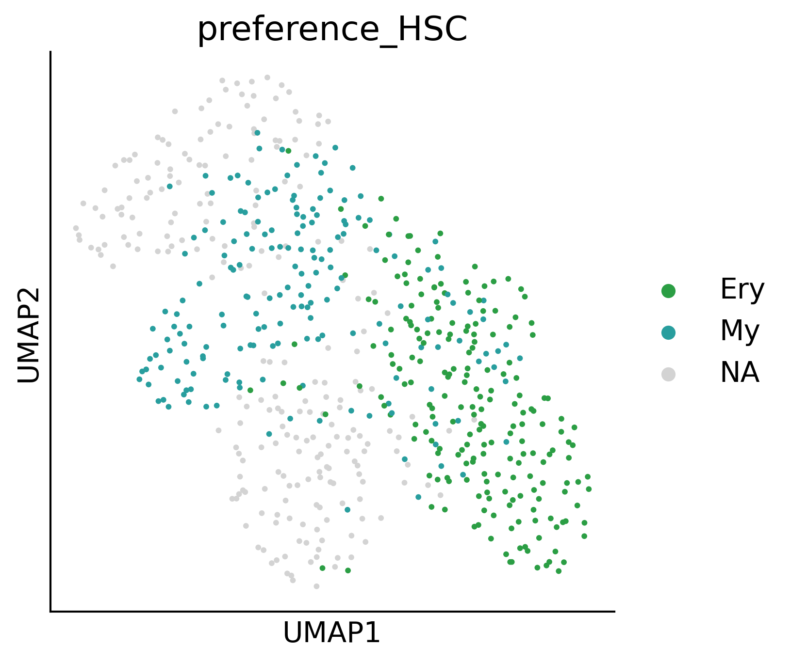
[418]:
import sklearn
sklearn.metrics.silhouette_score(
adata[adata.obs['preference_HSC'].isin(['My','Ery'])].obsm["X_umap"],
adata[adata.obs['preference_HSC'].isin(['My','Ery'])].obs['preference_HSC']
)
[418]:
0.3386568
[478]:
fig,ax=createFig((5,5))
sc.pl.umap(adata, color='fate_pred', palette = {
"Ery": "#2B9E44",
"My": "#289E9E",
"HSC": '#E6DCD9',
"-": '#E6DCD9',
}, s=32, ax=ax)
ax.figure.savefig('/home/zhengtuo/songtao/DestinyNet/carlin_figure/carlin_fate_pred.pdf', bbox_inches='tight')
/home/zhengtuo/miniconda3/lib/python3.9/site-packages/scanpy/plotting/_tools/scatterplots.py:392: UserWarning: No data for colormapping provided via 'c'. Parameters 'cmap' will be ignored
cax = scatter(
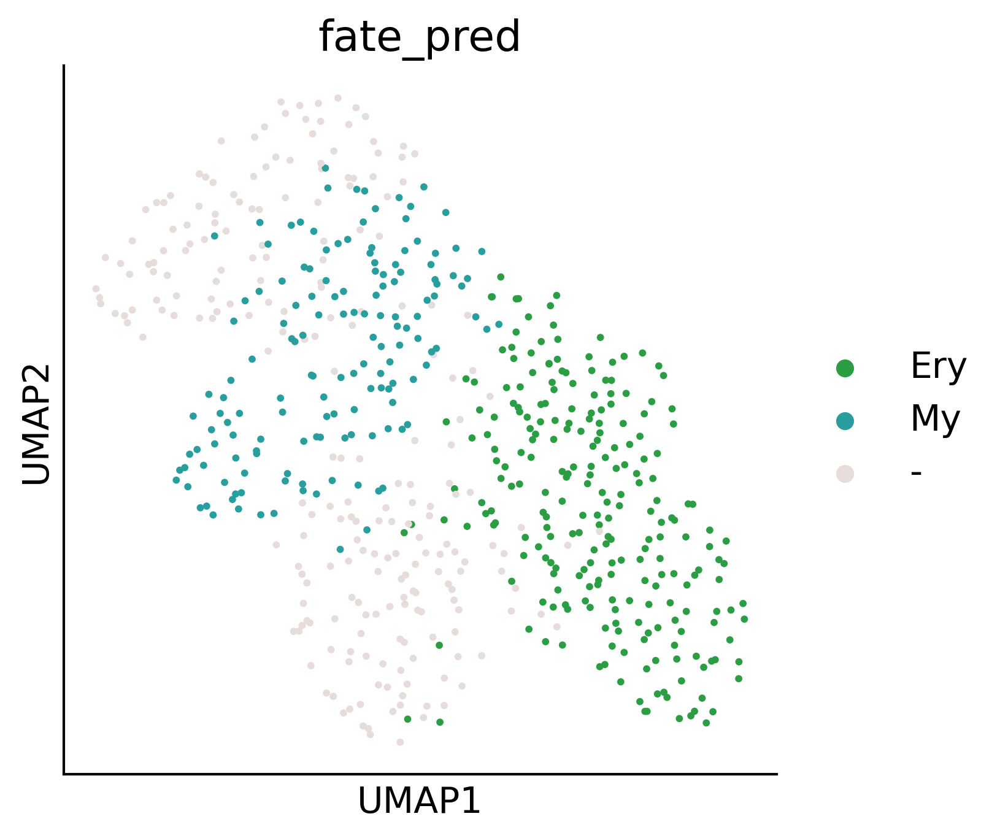
[419]:
def compute_velocity_on_grid(
X_emb,
M_emb,
density=None,
smooth=None,
n_neighbors=None,
min_mass=None,
autoscale=True,
adjust_for_stream=False,
cutoff_perc=None,
):
# remove invalid cells
idx_valid = np.isfinite(X_emb.sum(1) + M_emb.sum(1))
X_emb = X_emb[idx_valid]
M_emb = M_emb[idx_valid]
# prepare grid
n_obs, n_dim = X_emb.shape
density = 0.5 if density is None else density
smooth = 0.5 if smooth is None else smooth
grs = []
for dim_i in range(n_dim):
m, M = np.min(X_emb[:, dim_i]), np.max(X_emb[:, dim_i])
m = m - 0.01 * np.abs(M - m)
M = M + 0.01 * np.abs(M - m)
gr = np.linspace(m, M, int(50 * density))
grs.append(gr)
meshes_tuple = np.meshgrid(*grs)
X_grid = np.vstack([i.flat for i in meshes_tuple]).T
# estimate grid velocities
if n_neighbors is None:
n_neighbors = int(n_obs / 50)
nn = NearestNeighbors(n_neighbors=n_neighbors, n_jobs=-1)
nn.fit(X_emb)
dists, neighs = nn.kneighbors(X_grid)
scale = np.mean([(g[1] - g[0]) for g in grs]) * smooth
weight = normal.pdf(x=dists, scale=scale)
p_mass = weight.sum(1)
V_grid = (M_emb[neighs] * weight[:, :, None]).sum(1)
V_grid /= np.maximum(1, p_mass)[:, None]
if min_mass is None:
min_mass = 1
if adjust_for_stream:
X_grid = np.stack([np.unique(X_grid[:, 0]), np.unique(X_grid[:, 1])])
ns = int(np.sqrt(len(V_grid[:, 0])))
V_grid = V_grid.T.reshape(2, ns, ns)
mass = np.sqrt((V_grid ** 2).sum(0))
min_mass = 10 ** (min_mass - 6) # default min_mass = 1e-5
min_mass = np.clip(min_mass, None, np.max(mass) * 0.9)
cutoff = mass.reshape(V_grid[0].shape) < min_mass
if cutoff_perc is None:
cutoff_perc = 5
length = np.sum(np.mean(np.abs(M_emb[neighs]), axis=1), axis=1).T
length = length.reshape(ns, ns)
cutoff |= length < np.percentile(length, cutoff_perc)
V_grid[0][cutoff] = np.nan
else:
min_mass *= np.percentile(p_mass, 99) / 100
X_grid, V_grid = X_grid[p_mass > min_mass], V_grid[p_mass > min_mass]
if autoscale:
V_grid /= 3 * quiver_autoscale(X_grid, V_grid)
return X_grid, V_grid
def quiver_autoscale(X_emb, V_emb):
import matplotlib.pyplot as pl
scale_factor = np.abs(X_emb).max() # just so that it handles very large values
fig, ax = pl.subplots()
Q = ax.quiver(
X_emb[:, 0] / scale_factor,
X_emb[:, 1] / scale_factor,
V_emb[:, 0],
V_emb[:, 1],
angles="xy",
scale_units="xy",
scale=None,
)
Q._init()
fig.clf()
pl.close(fig)
return Q.scale / scale_factor
[420]:
import numpy as np
from scipy.stats import norm as normal
from sklearn.neighbors import NearestNeighbors
import tqdm
adata2=adata
sc.pp.neighbors(adata)
X = adata.obsm['geneEnc'][:,0,:]
M = adata.obsm['genemap'][:,0,:]
N = adata.obsp['connectivities']
E = adata.obsm["X_umap"]
norm = lambda x: (x-min(x))/(max(x)-min(x))
nn = NearestNeighbors(n_neighbors=5)
nn.fit(X)
dE = []
for i in tqdm.trange(N.shape[0]):
D,I = nn.kneighbors( np.array([M[i]]) )
dE.append( (E[I][0] - E[i]).mean(0))
dE = np.vstack(dE)
gE, gdE = compute_velocity_on_grid(E,dE,density=2, adjust_for_stream=True,smooth=True)
fig,ax=createFig()
fig.set_size_inches(5,5)
palette = sc.pl._tools.scatterplots._get_palette(adata, 'reannotation')
ax.scatter(E[:,0],E[:,1],s=10, linewidths=0,c=list(map(lambda x: palette[x], adata.obs['reannotation'])))
stream_kwargs = {
"linewidth": 0.5,
"density": 3,
"zorder": 3,
"color": "black",
"arrowsize": 1,
"arrowstyle": "-|>",
"maxlength": 10,
"integration_direction": "both",
}
ax.streamplot(gE[0],gE[1],gdE[0],gdE[1],**stream_kwargs)
100%|‚ñà‚ñà‚ñà‚ñà‚ñà‚ñà‚ñà‚ñà‚ñà‚ñà‚ñà‚ñà‚ñà‚ñà‚ñà‚ñà‚ñà‚ñà‚ñà‚ñà‚ñà‚ñà‚ñà‚ñà‚ñà‚ñà‚ñà‚ñà‚ñà‚ñà‚ñà‚ñà‚ñà‚ñà‚ñà‚ñà‚ñà‚ñà‚ñà| 612/612 [00:00<00:00, 1271.66it/s]
[420]:
<matplotlib.streamplot.StreamplotSet at 0x7f438e15d340>
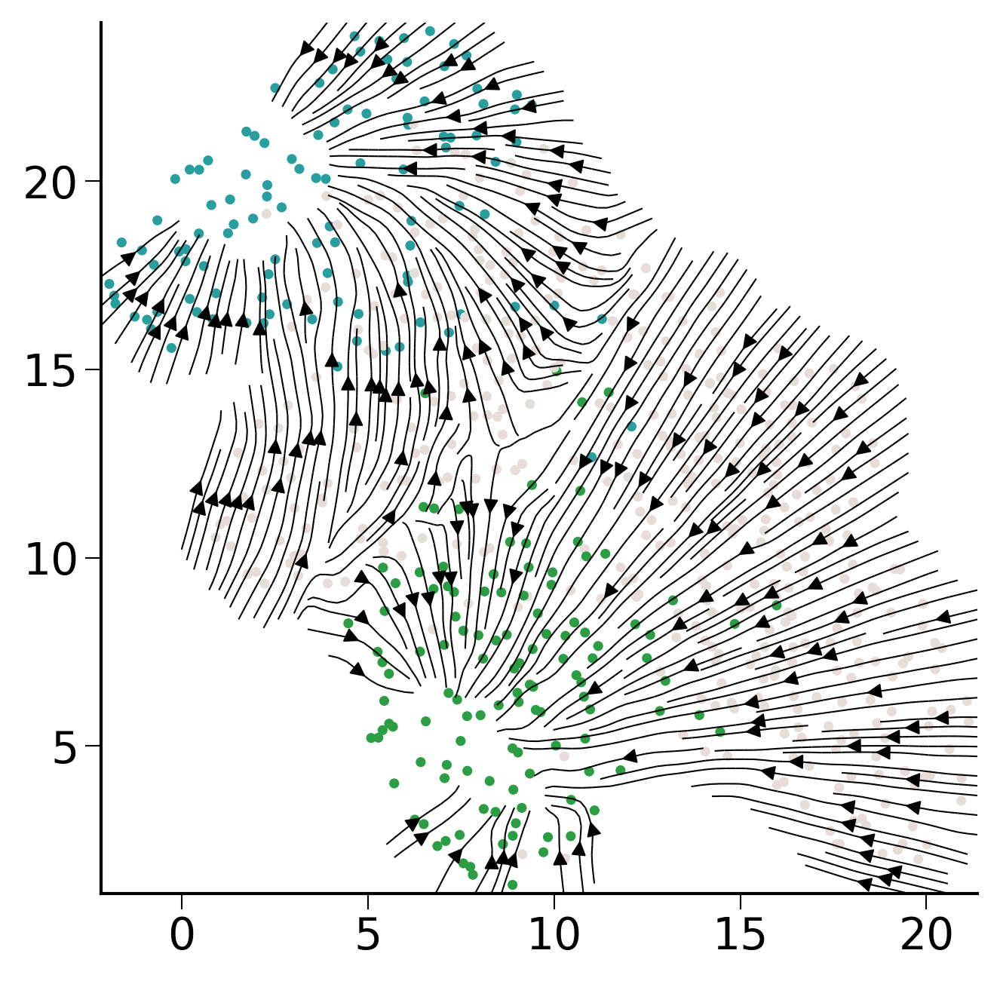
[423]:
fig,ax=createFig(figsize=(5, 5))
fig.set_size_inches(5,5)
palette = sc.pl._tools.scatterplots._get_palette(adata, 'fate_pred')
ax.scatter(
adata[adata.obs['preference_HSC'] == 'HSC'].obsm["X_umap"][:,0],
adata[adata.obs['preference_HSC'] == 'HSC'].obsm["X_umap"][:,1],
s = 2, color='#E6DCD9', linewidth=0
)
sc.pl.umap(
adata[adata.obs['preference_HSC'] != 'HSC'],
ax=ax,
color='fate_pred',
s=30,
palette = {
"Ery": "#2B9E44",
"My": "#289E9E",
"HSC": '#E6DCD9'
},
show=False
)
stream_kwargs = {
"linewidth": 0.5,
"density": 2,
"zorder": 3,
"color": "black",
"arrowsize": 1,
"arrowstyle": "-|>",
"maxlength": 10,
"integration_direction": "both",
}
ax.streamplot(gE[0],gE[1],gdE[0],gdE[1],**stream_kwargs)
plt.savefig("/home/zhengtuo/songtao/DestinyNet/carlin_figure/flow.pdf")
/home/zhengtuo/miniconda3/lib/python3.9/site-packages/scanpy/plotting/_utils.py:430: ImplicitModificationWarning: Trying to modify attribute `._uns` of view, initializing view as actual.
adata.uns[value_to_plot + '_colors'] = colors_list
/home/zhengtuo/miniconda3/lib/python3.9/site-packages/scanpy/plotting/_tools/scatterplots.py:392: UserWarning: No data for colormapping provided via 'c'. Parameters 'cmap' will be ignored
cax = scatter(
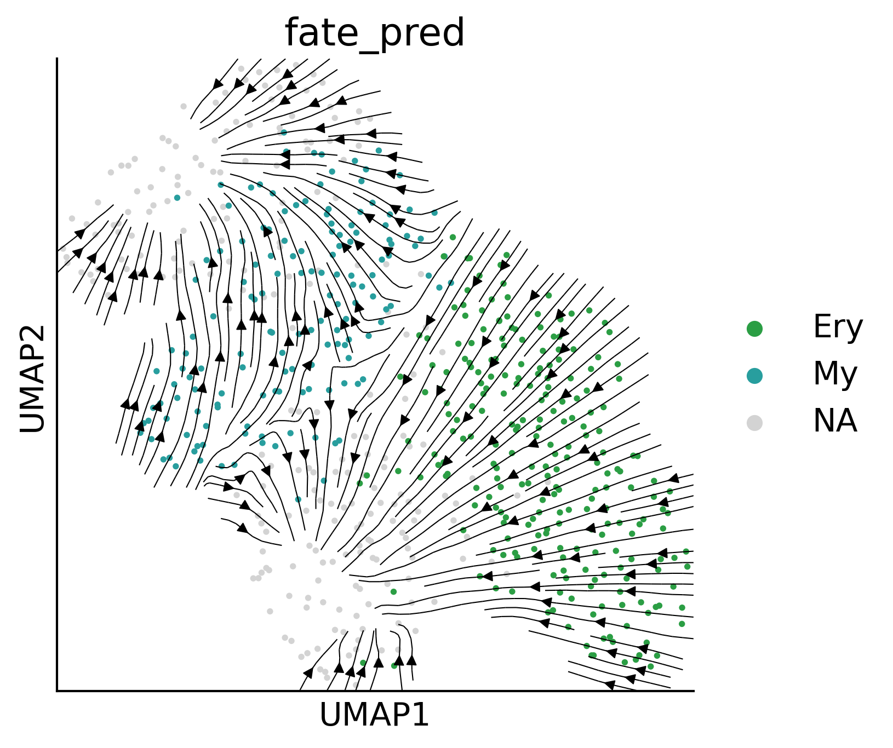
[424]:
sc.tl.leiden(adata, resolution=0.3)
adata.obs['fate_pred'].cat.add_categories(['-'], inplace=True)
adata.obs['fate_pred'] = adata.obs['fate_pred'].fillna('-')
sc.pl.umap(adata,color='leiden')
/tmp/ipykernel_97488/2133507794.py:2: FutureWarning: The `inplace` parameter in pandas.Categorical.add_categories is deprecated and will be removed in a future version. Removing unused categories will always return a new Categorical object.
adata.obs['fate_pred'].cat.add_categories(['-'], inplace=True)
/home/zhengtuo/miniconda3/lib/python3.9/site-packages/scanpy/plotting/_tools/scatterplots.py:392: UserWarning: No data for colormapping provided via 'c'. Parameters 'cmap' will be ignored
cax = scatter(
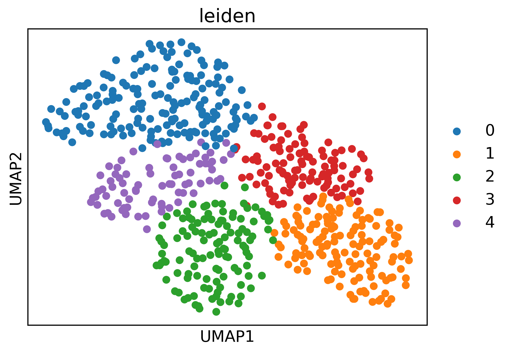
[426]:
adata.obs['fate_pred'].value_counts()
[426]:
Ery 236
- 226
My 150
Name: fate_pred, dtype: int64
[438]:
import seaborn as sns
xkey = 'geneEnc'
mkey = 'genemap'
X = adata.obsm['geneEnc'][:,0,:]
M = adata.obsm['genemap'][:,0,:]
N = adata.obsp['connectivities']
fig,ax=createFig()
fig.set_size_inches(6, 5)
palette={
'Ery': '#2A9E27',
'Lymphoid': '#E43E96',
'Mast': '#B5BD61',
'My': '#279E9E',
'Mo': '#50C3C6',
'Neu': '#FAA339',
'ME': '#279E8F',
'Ly': '#E43E96',
'HSC': '#E6DCD9',
'-':'#E6DCD9'
}
ax.scatter(E[:,0],E[:,1],s=1, linewidths=0,c=list(map(lambda x: palette[x], adata.obs['fate_pred'])))
# ax.scatter(E[:,0],E[:,1],s=1, linewidths=0,c=list(map(lambda x: sc.pl._tools.scatterplots._get_palette(biddy_adata, 'leiden')[x], biddy_adata.obs['leiden'])))
tmp = adata.obs
def NormalizeData(data):
return (data - np.min(data)) / (np.max(data) - np.min(data))
# sc.pl.umap(weinreb_adata, ax=ax, color='Gata2')
i=np.random.choice(list(map(lambda z: z[0],
filter(lambda x: x[1] == '0',
enumerate(adata.obs['leiden'])))), 1)
i
from sklearn.neighbors import NearestNeighbors
nn = NearestNeighbors(n_neighbors=40)
nn.fit(X)
D,I = nn.kneighbors(M[i])
e = E[I][0]
E = adata.obsm["X_umap"]
ax.scatter(
adata.obsm["X_umap"][:,0],
adata.obsm["X_umap"][:,1],
color='#F1F1F1',
s=2
)
stream_kwargs = {
"linewidth": 0.5,
"density": 1.8,
"zorder": 3,
"color": "black",
"arrowsize": 1,
"arrowstyle": "-|>",
"maxlength": 10,
"integration_direction": "both",
}
ax.streamplot(gE[0],gE[1],gdE[0],gdE[1],**stream_kwargs)
ax.scatter(E[i,0],E[i,1],color='red',s=20,marker='*')
# sns.kdeplot(e[:,0],e[:,1],ax=ax, fill=True, alpha=0.5, cmap='Reds',cbar=True)
sns.kdeplot(x=e[:,0], y=e[:,1], ax=ax, fill=True, alpha=0.5, cmap='Reds', cbar=True)
[438]:
<Axes: >
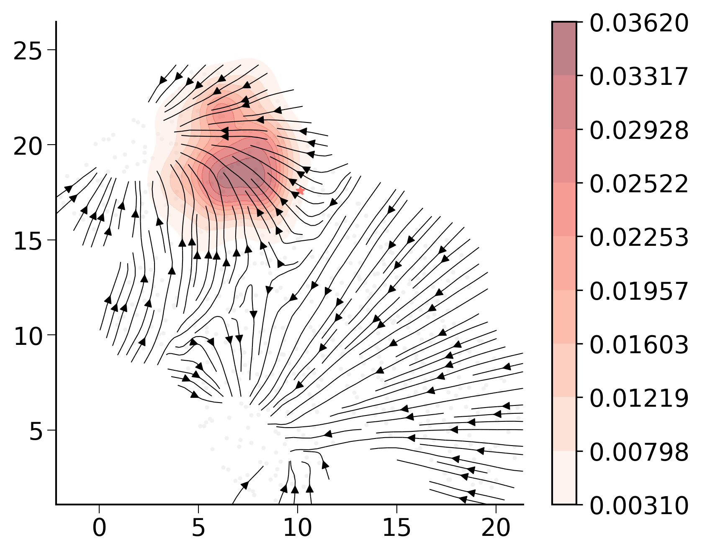
[439]:
from matplotlib.backends.backend_pdf import PdfPages
with PdfPages('/home/zhengtuo/songtao/DestinyNet/carlin_figure/fateflow_hotpot4.pdf') as pdf:
pdf.savefig(fig, bbox_inches='tight')
[168]:
top_genes
[168]:
Index(['Mllt3', 'Hnrnpa1', 'Eif5a', 'Scaper', 'Tmem71', 'Casc3', 'Hacd4',
'Prnp', 'Neurl3', 'Zscan2', 'Nkx2-3', 'Psmb4', 'Jun', 'Ssb', 'Psmb8',
'Ifi27', 'Flt3', 'Ctsl', 'H2-K1', 'Pde4b'],
dtype='object')
[61]:
fig,ax=createFig(figsize=(4,4))
sc.pl.umap(adata,color='Ccl9',ax=ax,s=50,cmap='Reds',vmin=0)#Apoe,Ifitm1,Mpl,Dntt
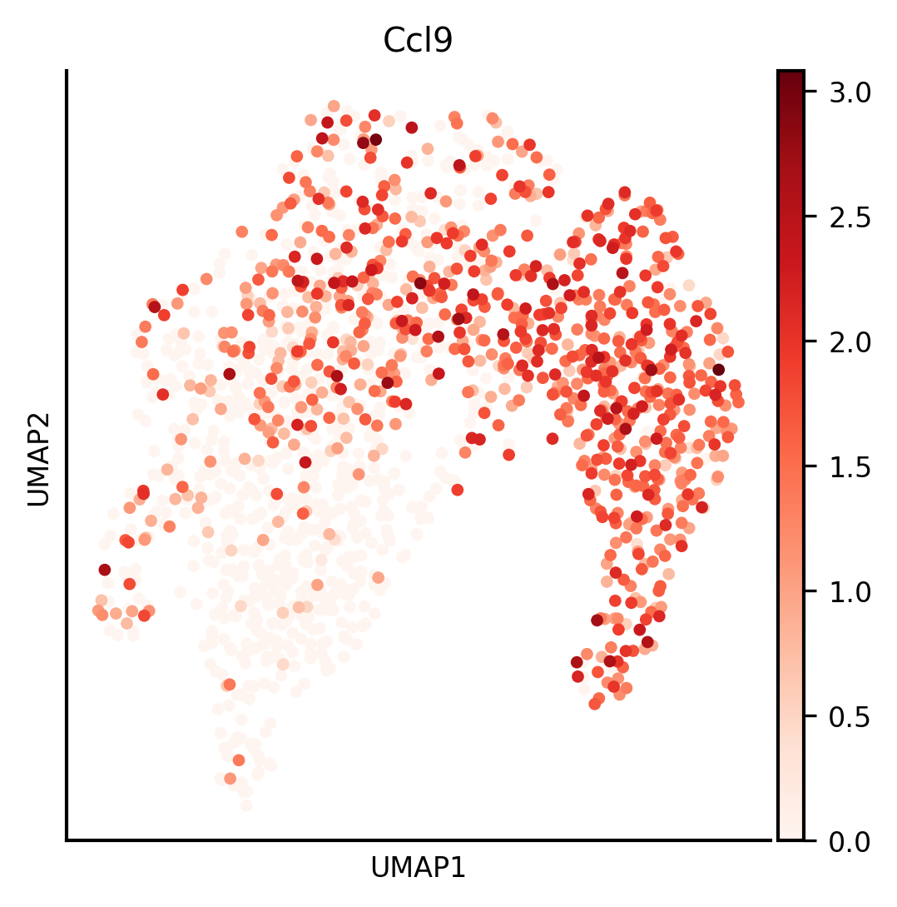
[440]:
#adata2.obsm['X_pca']=adata2.obsm['X_pca'].cpu().numpy()
adata3=adata2[(adata2.obs['reannotation']=='HSC')&(adata2.obs['fate_pred'].isin(['My','Ery']))]
from sklearn.neighbors import KNeighborsClassifier
plt.rcParams['font.size'] = 14
fig,ax=createFig(figsize=(3,3))
sc.pl.umap(adata3,color=['fate_pred'],ax=ax,s=10)
sc.tl.rank_genes_groups(adata3, groupby='fate_pred', method='t-test_overestim_var')
sc.pl.heatmap(
adata3[list(map(lambda x: type(x) == str, adata3.obs['fate_pred']))],
pd.DataFrame(adata3.uns['rank_genes_groups']['names']).head(16).to_numpy().flatten(),
groupby='fate_pred', cmap='Reds'
)
/home/zhengtuo/miniconda3/lib/python3.9/site-packages/scanpy/plotting/_utils.py:430: ImplicitModificationWarning: Trying to modify attribute `._uns` of view, initializing view as actual.
adata.uns[value_to_plot + '_colors'] = colors_list
/home/zhengtuo/miniconda3/lib/python3.9/site-packages/scanpy/plotting/_tools/scatterplots.py:392: UserWarning: No data for colormapping provided via 'c'. Parameters 'cmap' will be ignored
cax = scatter(
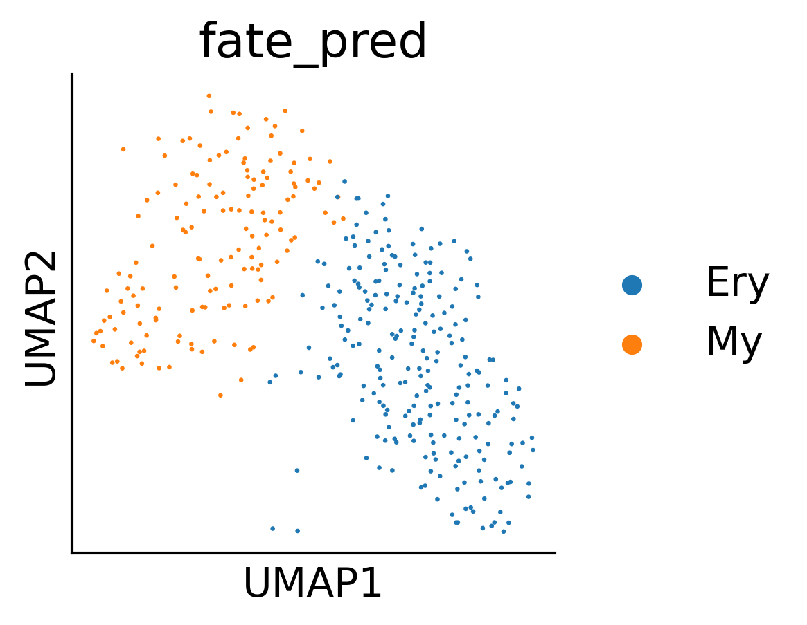
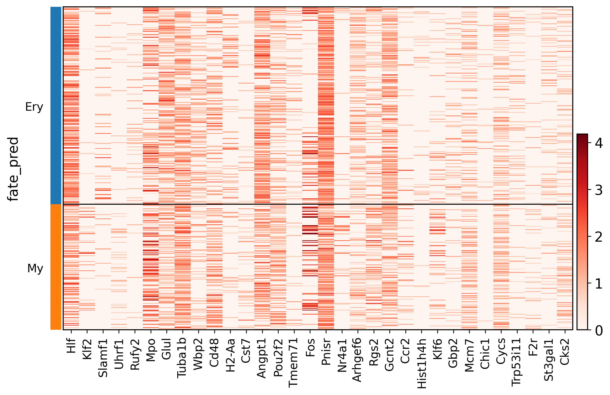
[ ]:
"Ery": "#2B9E44",
"My": "#289E9E",
[442]:
plt.rcParams['font.size'] = 8
fig,ax=ScanpyVolcanoPlot(
adata3,
1, label_log_p=1.3,
show_label=True,
label_fold_change=1,
label_size=2,
add_grid=False,
color1='#289E9E',
color2='#2B9E44',
)
ax.set_xbound(-7,7)
fig.set_size_inches(4,4)
fig.savefig("/home/zhengtuo/songtao/DestinyNet/carlin_figure/carlin_volcano.pdf", dpi=1000)
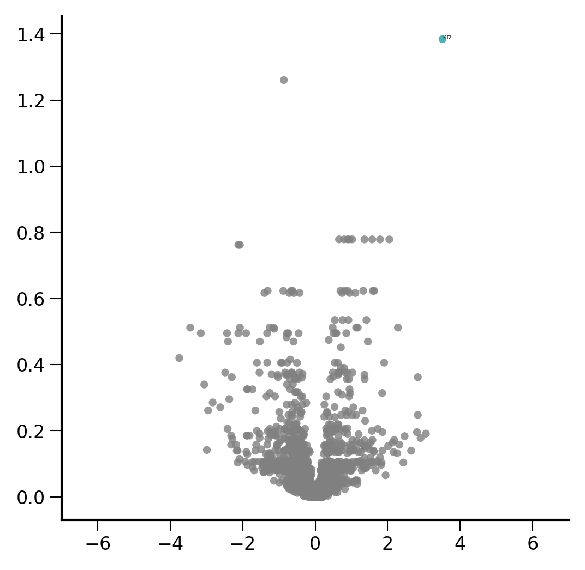
[63]:
plt.rcParams['font.size'] = 8
fig,ax=ScanpyVolcanoPlot(
adata3,
1, label_log_p=1.3,
show_label=False,
label_fold_change=1,
label_size=2,
add_grid=False,
color1='#289E9E',
color2='#2B9E44',
)
ax.set_xbound(-7,7)
fig.set_size_inches(4,4)
fig.savefig("/home/zhengtuo/songtao/DestinyNet/carlin_figure/carlin_volcano_nowords.pdf", dpi=1000)
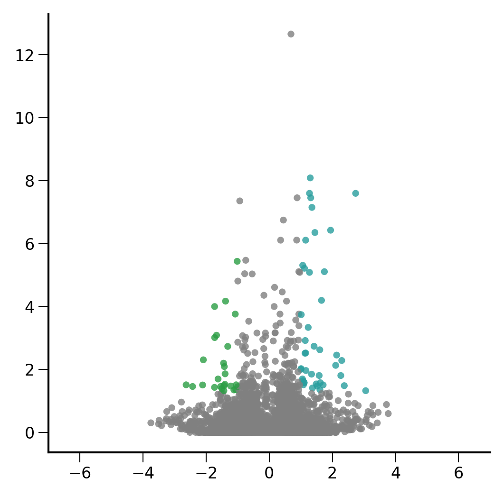
[388]:
adata3_GT=adata[adata.obs['preference_HSC'].isin(['My','Ery'])]
sc.tl.rank_genes_groups(adata3_GT, groupby='preference_HSC', method='t-test_overestim_var')
/home/zhengtuo/miniconda3/lib/python3.9/site-packages/scanpy/tools/_rank_genes_groups.py:580: ImplicitModificationWarning: Trying to modify attribute `._uns` of view, initializing view as actual.
adata.uns[key_added] = {}
[64]:
plt.rcParams['font.size'] = 8
fig,ax=ScanpyVolcanoPlot(
adata3_GT,
1, label_log_p=1.3,
show_label=True,
label_fold_change=1,
label_size=4,
add_grid=False,
color1='#289E9E',
color2='#2B9E44',
)
ax.set_xbound(-7,7)
fig.set_size_inches(4,4)
fig.savefig("/home/zhengtuo/songtao/DestinyNet/carlin_figure/carlin_volcano_GT.pdf", dpi=1000)
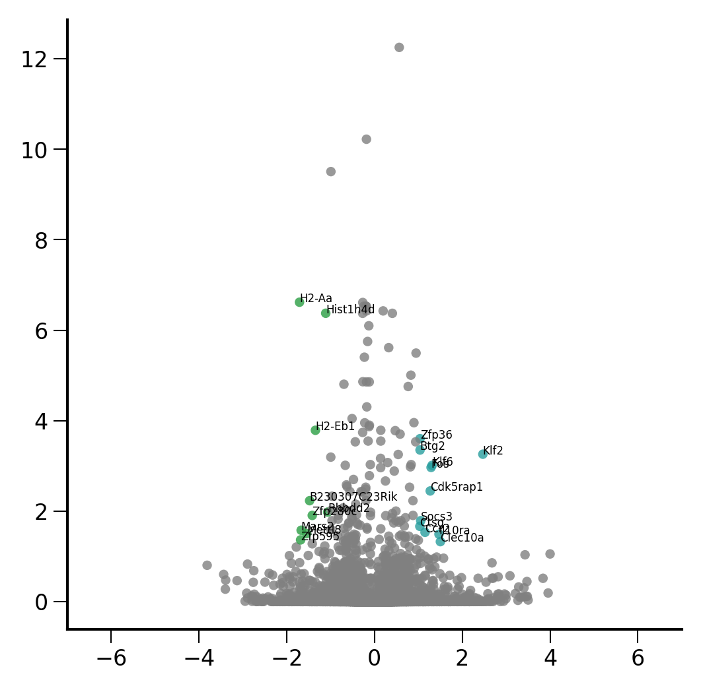
[65]:
plt.rcParams['font.size'] = 8
fig,ax=ScanpyVolcanoPlot(
adata3_GT,
1, label_log_p=1.3,
show_label=False,
label_fold_change=1,
label_size=4,
add_grid=False,
color1='#289E9E',
color2='#2B9E44',
)
ax.set_xbound(-7,7)
fig.set_size_inches(4,4)
fig.savefig("/home/zhengtuo/songtao/DestinyNet/carlin_figure/carlin_volcano_GT_nowords.pdf", dpi=1000)
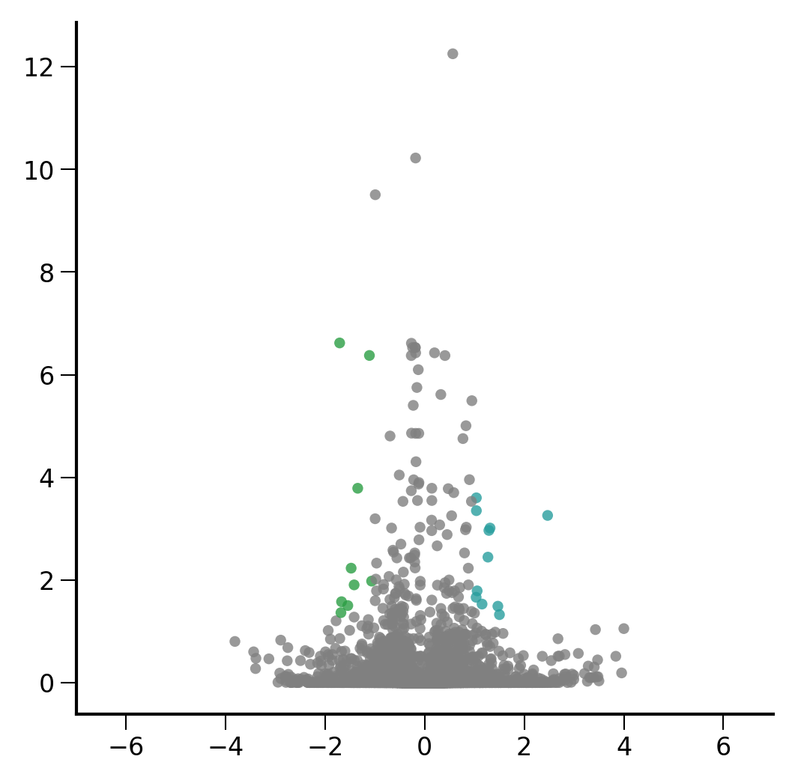
[378]:
adata
[378]:
AnnData object with n_obs √ó n_vars = 1558 √ó 20863
obs: 'sample_name', 'leiden', 'reannotation', 'preference', 'preference_HSC', 'preference_MPP', 'index', 'fate_pred', 'prob'
uns: 'fate_pred_colors', 'neighbors', 'preference_HSC_colors', 'reannotation_colors', 'umap'
obsm: 'X_emb', 'X_emb_old', 'X_pca', 'X_pca_sct', 'X_umap', 'X_umap_sct', 'geneEnc', 'genemap'
obsp: 'connectivities', 'distances'
[41]:
import seaborn as sns
import pandas as pd
from torch.utils.data import DataLoader, TensorDataset
from torch.autograd import Variable
import torch.nn as nn
def compute_gradients_for_label(target_label, data, model_encoder, model_decoder):
mask = data.obs['fate_pred'] == target_label
filtered_data = data[mask]
geneex_data = torch.tensor(filtered_data.X.toarray(), dtype=torch.float32).to(device2)
dataset = TensorDataset(geneex_data)
dataloader = DataLoader(dataset, batch_size=256, shuffle=False)
total_gradients = torch.zeros(len_geneExp).to(device2)
for batch in dataloader:
geneExp = batch[0]
geneExp = Variable(geneExp, requires_grad=True)
output_data = model_encoder(geneExp)
output_data = model_decoder(output_data)
loss_function = nn.MSELoss()
loss = loss_function(output_data, geneExp)
model_encoder.zero_grad()
model_decoder.zero_grad()
loss.backward()
total_gradients += geneExp.grad.abs().mean(dim=0)
average_gradients = total_gradients / len(dataloader)
return average_gradients
labels = ['My', 'Ery']
gradients_per_label = {}
for label in labels:
gradients_per_label[label] = compute_gradients_for_label(label, adata, geneEnc, geneDec)
[42]:
num_key_genes = 50
key_genes_per_label = {}
for label, gradients in gradients_per_label.items():
df = pd.DataFrame({
'gene_ids': adata.var.index.values,
'importance': gradients.cpu().detach().numpy()
})
sorted_df = df.sort_values(by="importance", ascending=False)
key_genes = sorted_df['gene_ids'].head(num_key_genes).tolist()
key_genes_per_label[label] = key_genes
for label, genes in key_genes_per_label.items():
print(f"Key genes for label {label}:")
print(', '.join(genes))
print("\n")
Key genes for label My:
H2afy, Ifitm1, Srgn, Plac8, Ctla2a, Lmo2, Rpl31, Ncl, Sox4, Ifitm3, Zfp36l2, Ptprcap, Car2, Calr, Tmsb10, Vim, Jun, Hspe1, Stmn1, Cdk6, Prtn3, Cd34, Adgrl4, Adgrg1, Tubb5, Mpo, Pim1, Txnip, Msi2, Pnrc1, Ldha, Mef2c, Ogt, Samsn1, Akap13, Ier2, Serinc3, Ubc, Pnisr, Fos, Ifi203, Egfl7, Jund, Limd2, Hmgb2, Dapp1, Tspo, Hlf, H2-T23, Serpinb1a
Key genes for label Ery:
H2afy, Ifitm1, Srgn, Lmo2, Ctla2a, Rpl31, Ifitm3, Plac8, Zfp36l2, Sox4, Car2, Ncl, Ptprcap, Calr, Txnip, Prtn3, Vim, Hlf, Tmsb10, Adgrg1, Pim1, Pnrc1, Adgrl4, Stmn1, Ogt, Pnisr, Cd34, Ifi203, Msi2, Hspe1, Serinc3, Gimap1, Ptpre, Dapp1, Cdk6, Akap13, Jun, Tubb5, Aes, H2-Q7, Angpt1, Limd2, Gimap6, Cd63, Ubc, Foxp1, Ltb, Tspo, H2-T23, Dcun1d1
[56]:
gradient_data = {}
for label, gradients in gradients_per_label.items():
gradient_data[label] = gradients.cpu().detach().numpy()
df_gradients_all = pd.DataFrame(gradient_data, index=adata.var.index.values)
def normalize(column):
"""Normalize a pandas column to range between 0 and 1"""
min_val = column.min()
max_val = column.max()
return (column - min_val) / (max_val - min_val)
# Normalize gradients for each label
for label in labels:
df_gradients_all[label] = normalize(df_gradients_all[label])
# Compute difference between normalized gradients for the two labels
df_gradients_all['diff'] = (df_gradients_all[labels[0]] - df_gradients_all[labels[1]])
# Select the top 20 genes with the largest gradient difference
top_genes = df_gradients_all['diff'].abs().nlargest(100).index
# Extract the normalized gradient values for the top genes
df_gradient_top = df_gradients_all.loc[top_genes, labels]
# Plot heatmap
plt.figure(figsize=(12, 8))
sns.heatmap(df_gradient_top, cmap="coolwarm", annot=True, cbar_kws={'label': 'Normalized Gradient Difference'})
plt.title("Normalized Gradient Difference of Top 20 Differentially Expressed Genes across Labels", fontsize=15)
plt.ylabel('Top Genes', fontsize=12)
plt.xlabel('Labels', fontsize=12)
plt.tight_layout()
plt.show()
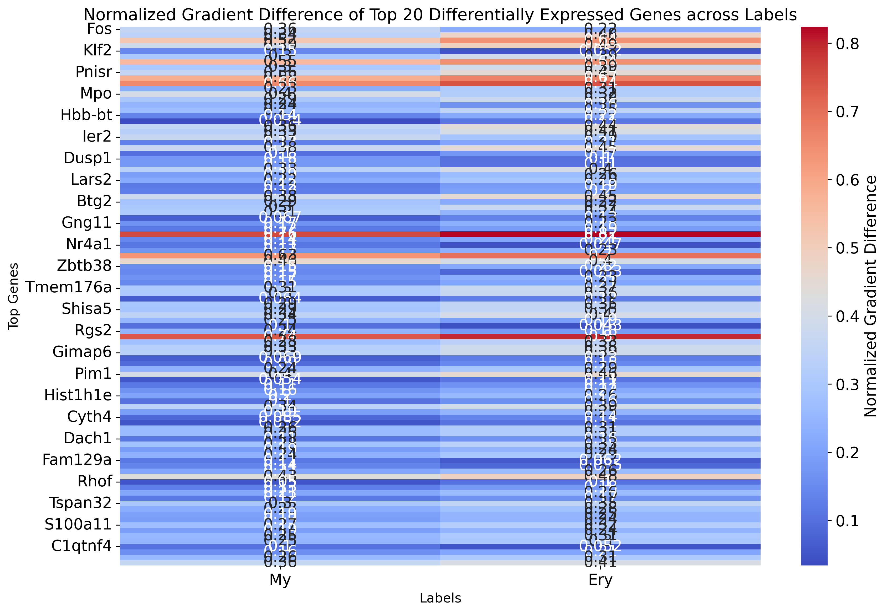
[57]:
import matplotlib.pyplot as plt
df_gradients_all_normalized = df_gradients_all.copy()
for label in labels:
df_gradients_all_normalized[label] = (df_gradients_all[label] - df_gradients_all[label].min()) / (df_gradients_all[label].max() - df_gradients_all[label].min())
num=50
df_gradients_all_normalized[labels[0]] = -df_gradients_all_normalized[labels[0]]
df_gradients_all_normalized['bias'] = df_gradients_all_normalized[labels[1]] + df_gradients_all_normalized[labels[0]]
sorted_df_right_bias = df_gradients_all_normalized.sort_values(by='bias', ascending=False).head(num)
sorted_df_right_bias =sorted_df_right_bias.sort_values(by='bias', ascending=True)
sorted_df_left_bias = df_gradients_all_normalized.sort_values(by='bias').head(num)
sorted_df_left_bias =sorted_df_left_bias.sort_values(by='bias', ascending=False)
top_genes_bias = pd.concat([sorted_df_left_bias, sorted_df_right_bias])
#top_genes_bias = top_genes_bias.sort_values(by='bias', key=abs, ascending=False)
fig, ax = plt.subplots(figsize=(12, 18))
colors = ['blue', 'red']
for gene in top_genes_bias.index:
for i, label in enumerate(labels):
x_value = top_genes_bias.loc[gene, label]
y_value = list(top_genes_bias.index).index(gene)
ax.plot(x_value, y_value, marker='o', color=colors[i])
if i == 0:
x_values = [top_genes_bias.loc[gene, labels[0]], top_genes_bias.loc[gene, labels[1]]]
y_values = [y_value, y_value]
ax.plot(x_values, y_values, linestyle='-', color='grey')
ax.axvline(0, color='black', linestyle='--')
divider_position = num
ax.axhline(divider_position - 0.5, color='green', linestyle='--')
ax.set_yticks(range(len(top_genes_bias.index)))
ax.set_yticklabels(top_genes_bias.index)
ax.set_title('Top 20 Genes with Highest Gradient Bias')
ax.set_xlabel('Normalized Gradient Value')
ax.legend(labels, loc='upper right')
plt.tight_layout()
plt.show()
fig.savefig("/home/zhengtuo/songtao/DestinyNet/carlin_figure/carlin_lolipop_plot_top50.pdf", dpi=1000)
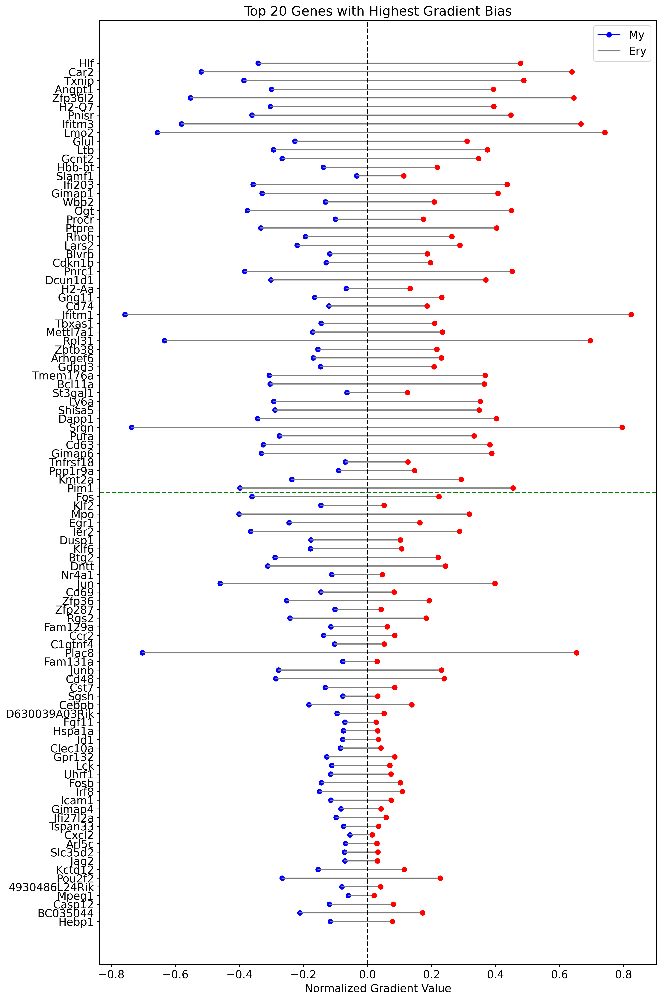
[25]:
dic1={'Mo':'My','Neu':'My','Mk':'Ery','HSC':'HSC','Ery':'Ery'}
adata.obs['reannotation']=adata.obs['reannotation'].map(dic1)
adata.obs['reannotation'].value_counts()
[25]:
HSC 386
Ery 119
My 107
Name: reannotation, dtype: int64
[59]:
import pandas as pd
df = pd.read_csv('/home/zhengtuo/songtao/tf.csv')
filtered_df = df[df['Symbol'].isin(top_genes)]['Symbol']
print(filtered_df.values)
['Hlf' 'Egr1' 'Zfp36l2' 'Zfp287' 'Zbtb38' 'Pura' 'Pou2f2' 'Nr4a1' 'Klf6'
'Klf2' 'Junb' 'Jun' 'Irf8' 'Id1' 'Fosb' 'Fos' 'Cebpb' 'Bcl11a']
[62]:
import anndata
# df_expression_all['diff'] = df_expression_all[labels[0]] - df_expression_all[labels[1]]
top_genes = top_genes_bias[::-1].index
sc.pl.dotplot(adata[adata.obs['fate_pred']!='-'],
var_names=filtered_df.values,
groupby='fate_pred',
figsize=(8, 3),
dot_max=0.5,
color_map='Reds',
title="Top Differentially Expressed Genes across Cell Fate",
vmin=0.1,
vmax=2,
save='carlin_dotplot_top50_tf.pdf')
WARNING: saving figure to file figures/dotplot_carlin_dotplot_top50_tf.pdf
/home/zhengtuo/miniconda3/lib/python3.9/site-packages/scanpy/plotting/_dotplot.py:749: UserWarning: No data for colormapping provided via 'c'. Parameters 'cmap', 'norm' will be ignored
dot_ax.scatter(x, y, **kwds)
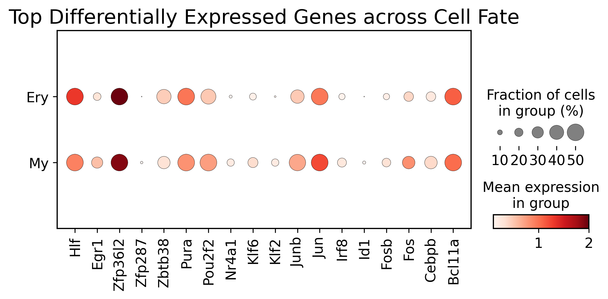
[137]:
x_indices = list(map(lambda x: x[0], sorted(enumerate(_biddy_adata.obs['dic_fate_prob']), key=lambda x: x[1])))
var_names = ['Apoa1','S100a13','Gsto1','Msln','Cd9','Timp3','Rbp1','2200002D01Rik','Ccnd1','S100a6','Ly6a','Sorbs2','Anxa3','Plac8','Spint2','Fabp5','Fbn2','Thbs1','Fstl1','Igf2','Rcn3','Serpine2','Col5a2','Aebp1','Cdh11','Itm2a','Ifitm2','Igfbp4','Col6a1','Ogn','Cxcl12','Cryab','Bgn','Marcks','Cxcl15','Fzd1','Gas1','Spp1','Svep1','Loxl1','Mmp2','Ifitm3','Col1a2','Tcf4','Sparc','Peg3','Col1a1','Igfbp2','Col3a1','Il6st']
y_indices = list(map(lambda x: list(_biddy_adata.var.index).index(x), var_names))
expr = _biddy_adata.raw.to_adata().X[x_indices,:,][:,y_indices]
expr = pd.DataFrame(expr, columns=var_names)
cmap = make_colormap(['#E4B748','#F7F7F7','#E5499B'])
fig=sns.clustermap(
expr,
row_cluster=False,
col_cluster=False,
z_score=1,
cmap='seismic',
col_colors=['#E5499B'] * 16 + ['#E4B748'] * (len(var_names) - 16),
row_colors=list(map(lambda x: cmap(x), _biddy_adata.obs['dic_fate_prob'][x_indices])),
center=0
)
fig.savefig("/Users/snow/Downloads/20230914_LT_Pseudotime_Biddy_prob_gene_exp/heatmap.pdf")
fig.savefig("/Users/snow/Downloads/20230914_LT_Pseudotime_Biddy_prob_gene_exp/heatmap.png")
[137]:
'#289E9E'
[409]:
adata2.obs['prob']
[409]:
AAACGCTTCTTCCTAA-1 None
AAAGGATGTCAGACTT-1 0.07216494530439377
AAAGGATGTGGGTATG-1 None
AACAAAGAGTAGGATT-1 None
AACAACCTCATGCTAG-1 None
...
TTTGATCTCGGCATCG-1 0.34117648005485535
TTTGGAGGTACCCGCA-1 0.4193548262119293
TTTGGAGTCGGCATCG-1 None
TTTGGTTCAATGAGCG-1 None
TTTGTTGTCGGTAAGG-1 None
Name: prob, Length: 1558, dtype: category
Categories (503, object): ['0.0', '0.5', '0.25', '0.75', ..., '0.061093248426914215', '0.0062500000931322575', '1.0', 'None']
[17]:
df_gradients_all['abs_diff'] = df_gradients_all['diff'].abs()
sorted_df = df_gradients_all.sort_values(by=['abs_diff', 'diff'], ascending=[False, True])
top_20_genes = sorted_df.head(20)
top_20_genes_sorted = top_20_genes.sort_values(by=['diff', 'abs_diff'], ascending=[False, False])
var_names = top_20_genes_sorted.index.tolist()
top_20_genes_sorted
[17]:
| My | Ery | diff | abs_diff | |
|---|---|---|---|---|
| Fos | 0.360704 | 0.223209 | 0.137495 | 0.137495 |
| Klf2 | 0.145687 | 0.051841 | 0.093846 | 0.093846 |
| Mpo | 0.401033 | 0.318277 | 0.082756 | 0.082756 |
| Egr1 | 0.244896 | 0.163873 | 0.081022 | 0.081022 |
| Gimap1 | 0.329236 | 0.407452 | -0.078215 | 0.078215 |
| Ifi203 | 0.357288 | 0.436235 | -0.078947 | 0.078947 |
| Slamf1 | 0.033929 | 0.113425 | -0.079496 | 0.079496 |
| Hbb-bt | 0.138137 | 0.218351 | -0.080214 | 0.080214 |
| Gcnt2 | 0.266860 | 0.347409 | -0.080550 | 0.080550 |
| Ltb | 0.293661 | 0.375018 | -0.081357 | 0.081357 |
| Glul | 0.226999 | 0.310997 | -0.083998 | 0.083998 |
| Lmo2 | 0.656750 | 0.742076 | -0.085326 | 0.085326 |
| Ifitm3 | 0.580829 | 0.667090 | -0.086261 | 0.086261 |
| Pnisr | 0.360770 | 0.448239 | -0.087470 | 0.087470 |
| H2-Q7 | 0.303556 | 0.394600 | -0.091044 | 0.091044 |
| Zfp36l2 | 0.552694 | 0.644673 | -0.091979 | 0.091979 |
| Angpt1 | 0.299832 | 0.393674 | -0.093841 | 0.093841 |
| Txnip | 0.385906 | 0.488796 | -0.102890 | 0.102890 |
| Car2 | 0.519420 | 0.639244 | -0.119823 | 0.119823 |
| Hlf | 0.341662 | 0.478859 | -0.137197 | 0.137197 |
[20]:
#adata.obs['prob']=adata.obs['prob'].astype(float)
adata2 = adata[(adata.obs['prob'])!='None']
adata2.obs['prob']=adata2.obs['prob'].astype(float)
x_indices = list(map(lambda x: x[0], sorted(enumerate(adata2.obs['prob']), key=lambda x: x[1])))
var_names = top_genes_bias.index
y_indices = list(map(lambda x: list(adata2.var.index).index(x), var_names))
expr = adata2.X[x_indices,:,][:,y_indices].toarray()
expr = pd.DataFrame(expr, columns=var_names)
cmap = make_colormap(['#289E9E','#F7F7F7','#2B9E44'])
fig=sns.clustermap(
expr,
row_cluster=False,
col_cluster=False,
z_score=1,
# vmin=-2,
# vmax=2,
cmap='seismic',
col_colors=['#289E9E'] * 10 + ['#2B9E44'] * (len(var_names) - 10),
row_colors = list(map(lambda x: cmap(float(x) ), adata2.obs['prob'][x_indices])),
center=0
)
#fig.savefig('/home/zhengtuo/songtao/DestinyNet/carlin_figure/heatmap.pdf')
# fig.savefig("/Users/snow/Downloads/20230914_LT_Pseudotime_Biddy_prob_gene_exp/heatmap.png")
/tmp/ipykernel_93469/2197485064.py:3: ImplicitModificationWarning: Trying to modify attribute `.obs` of view, initializing view as actual.
adata2.obs['prob']=adata2.obs['prob'].astype(float)
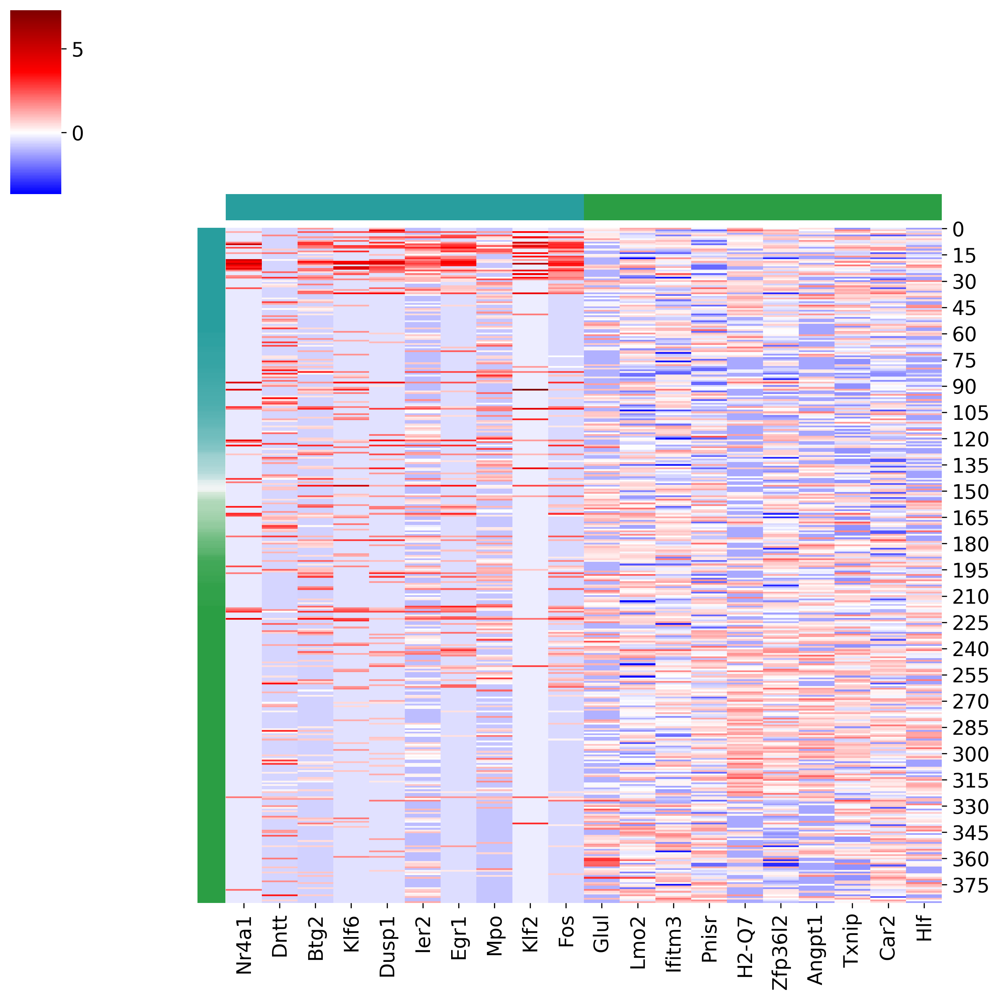
[395]:
adata3_GT
[395]:
AnnData object with n_obs √ó n_vars = 777 √ó 20863
obs: 'sample_name', 'leiden', 'reannotation', 'preference', 'preference_HSC', 'preference_MPP', 'index', 'fate_pred', 'prob'
uns: 'fate_pred_colors', 'neighbors', 'preference_HSC_colors', 'reannotation_colors', 'umap', 'rank_genes_groups'
obsm: 'X_emb', 'X_emb_old', 'X_pca', 'X_pca_sct', 'X_umap', 'X_umap_sct', 'geneEnc', 'genemap'
obsp: 'connectivities', 'distances'
[389]:
import pandas as pd
genes_df = pd.DataFrame(adata3_GT.uns['rank_genes_groups']['names'])
GT_10_genes_group_0 = genes_df.iloc[:10, 0]
GT_10_genes_group_1 = genes_df.iloc[:10, 1]
GT_20_genes = GT_10_genes_group_0.append(GT_10_genes_group_1)
genes_index = pd.Index(GT_20_genes)
/tmp/ipykernel_97488/922251399.py:11: FutureWarning: The series.append method is deprecated and will be removed from pandas in a future version. Use pandas.concat instead.
GT_20_genes = GT_10_genes_group_0.append(GT_10_genes_group_1)
[390]:
genes_index
[390]:
Index(['mt-Co3', 'H2-Q7', 'H2-Aa', 'Rps25', 'Rpl30', 'Rpl34', 'Rpl37a',
'Rpl35a', 'Hist1h4d', 'Rpl37', 'Rplp0', 'Rps3a1', 'Gapdh', 'Hspa8',
'Cd48', 'Ubald2', 'Gm8797', 'Ccl9', 'Rpl8', 'Ifitm1'],
dtype='object')
[ ]:
from scipy.stats import zscore
selected_data = adata2[adata2.obs['fate_pred'].isin(['Ery','My'])]
z_scores = zscore(selected_data.X.toarray(), axis=0)
selected_data.X = z_scores
sc.pl.heatmap(
selected_data,
top_genes,
groupby='fate_pred',
cmap='RdBu_r',
vmin=-3,
vmax=3
)
[ ]:
sns.clustermap(
selected_data,
top_genes,
)
[8]:
import tqdm
from scanpy.neighbors import _compute_connectivities_umap
weinreb_adata_to_plot=adata2.copy()
weinreb_adata_mon = weinreb_adata_to_plot[
(np.array(weinreb_adata_to_plot.obs['reannotation'] == 'Ery') |
np.array(weinreb_adata_to_plot.obs['fate_pred'] == 'Ery') )
#np.array(biddy_adata.obs['leiden'] != '9') & np.array(biddy_adata.obs['leiden'] != '13')
]
nn = NearestNeighbors(n_neighbors=20)
nn.fit(weinreb_adata_mon.obsm["geneEnc"][:,0,:])
D,I=nn.kneighbors(weinreb_adata_mon.obsm["geneEnc"][:,0,:])
# weinreb_adata_to_plot.uns['dE']
from scipy import spatial
II,DD=[],[]
pbar = tqdm.tqdm(total=len(weinreb_adata_mon))
idE = dE[(np.array(weinreb_adata_to_plot.obs['reannotation'] == 'Ery') |
np.array(weinreb_adata_to_plot.obs['fate_pred'] == 'Ery') ) ]
for i,d in zip(I,D):
index = list(map(lambda x: spatial.distance.cosine(x-weinreb_adata_mon.obsm["X_umap"][i[0]], idE[i[0]] ) > 0, weinreb_adata_mon.obsm["X_umap"][i[1:]]))
II.append(i[1:][index][:8])
DD.append(d[1:][index][:8])
pbar.update(1)
II,DD=np.vstack(II),np.vstack(DD)
import warnings
from scipy.sparse import coo_matrix
II,DD=np.vstack(II),np.vstack(DD)
Dc,Cc=_compute_connectivities_umap(II,DD,weinreb_adata_mon.shape[0],8)
Dc,Cc=_compute_connectivities_umap(I,D,weinreb_adata_mon.shape[0],8)
weinreb_adata_mon.obsp['connectivities']=Cc
weinreb_adata_mon.obsp['distances']=Dc
undiff_cells = weinreb_adata_mon[weinreb_adata_mon.obs['reannotation'] == 'Ery']
min_x_index = np.argmax(undiff_cells.obsm["X_umap"][:, 0])
root_cell_index = undiff_cells.obs.index[min_x_index]
weinreb_adata_mon.uns['iroot'] = np.where(weinreb_adata_mon.obs.index == root_cell_index)[0][0]
sc.tl.diffmap(weinreb_adata_mon)
sc.tl.dpt(weinreb_adata_mon)
weinreb_adata_mon.obs['dpt_pseudotime'] = 1-weinreb_adata_mon.obs['dpt_pseudotime']
[9]:
fig, axes = plt.subplots(4, 1)
fig.set_size_inches(5, 10)
for i, ax in zip(['Apoe', 'Flt3','Mllt3'], axes):
varindex = list(weinreb_adata_mon.var.index).index(i)
indices = weinreb_adata_mon[:, varindex].X.toarray().ravel() != 0
sns.regplot(
x=weinreb_adata_mon.obs.loc[indices, 'dpt_pseudotime'],
y=weinreb_adata_mon[indices].X.toarray()[:, varindex].ravel(),
scatter_kws={
's': 10,
'linewidth': 0,
'color': list(map(lambda x: plt.cm.viridis(x), weinreb_adata_mon.obs.loc[indices, 'dpt_pseudotime']))
},
lowess=True,
ax=ax
)
[10]:
# sc.pl.umap(weinreb_adata_mon,color='dpt_pseudotime')
[11]:
# sc.pl.umap(weinreb_adata_mon,color='reannotation')
[19]:
from colour import Color
from matplotlib.colors import LinearSegmentedColormap
def make_colormap( colors, show_palette = False ):
color_ramp = LinearSegmentedColormap.from_list( 'my_list', [ Color( c1 ).rgb for c1 in colors ] )
if show_palette:
plt.figure( figsize = (15,3))
plt.imshow( [list(np.arange(0, len( colors ) , 0.1)) ] , interpolation='nearest', origin='lower', cmap= color_ramp )
plt.xticks([])
plt.yticks([])
return color_ramp
[467]:
fig,ax=createFig()
fig.set_size_inches(5,5)
adata.obs['prob'] = list(map(lambda x: 0 if not x or x == 'None' else float(x), adata.obs['prob']))
ax.scatter(
adata[list(map(lambda x: x != 'HSC', adata.obs['reannotation']))].obsm["X_umap"][:,0],
adata[list(map(lambda x: x != 'HSC', adata.obs['reannotation']))].obsm["X_umap"][:,1],
s = 10, color='#E6DCD9', linewidth=0
)
sc.pl.umap(
adata[list(map(lambda x: x == 'HSC', adata.obs['reannotation']))],
ax=ax,
color='prob',
s=30,
cmap=make_colormap(['#289E9E','#F7F7F7','#2B9E44']),
show=False
)
ax.streamplot(gE[0],gE[1],gdE[0],gdE[1],**stream_kwargs)
ax.figure.savefig('/home/zhengtuo/songtao/DestinyNet/carlin_figure/flow.pdf', bbox_inches='tight')
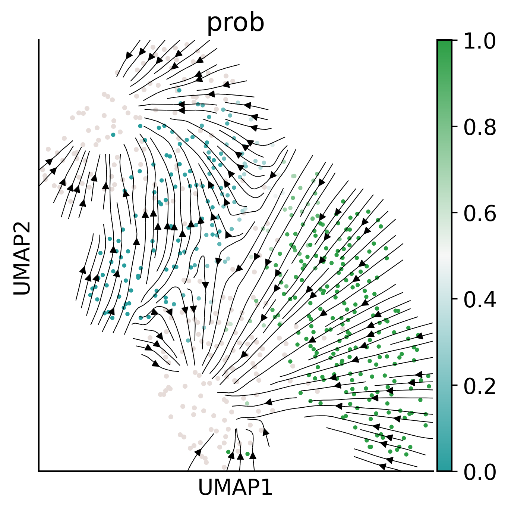
[468]:
import matplotlib.pyplot as plt
import numpy as np
from matplotlib.colors import ListedColormap
colormap=make_colormap(['#289E9E','#F7F7F7','#2B9E44'])
data = adata[adata.obs['reannotation']=='HSC'].obs['prob']
plt.figure(figsize=(8, 6))
n, bins, patches = plt.hist(data, bins=30, edgecolor='black', alpha=0.7)
norm = plt.Normalize(data.min(), data.max())
for thisbin, thispatch in zip(bins, patches):
color = colormap(norm(thisbin))
thispatch.set_facecolor(color)
plt.title("Distribution of fate_pred_prob")
plt.xlabel("fate_pred_prob")
plt.ylabel("Number of Cells")
plt.savefig("/home/zhengtuo/songtao/DestinyNet/carlin_figure/hisgram_carlin.pdf", bbox_inches='tight')
plt.show()
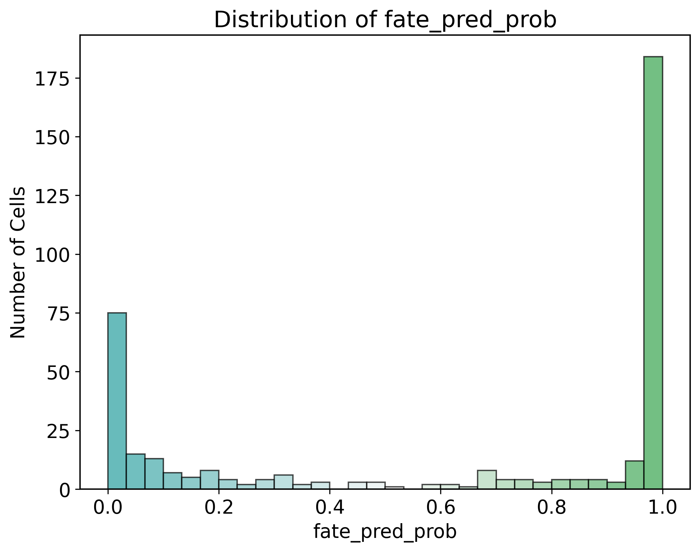
[81]:
top_genes
[81]:
Index(['Mllt3', 'Hnrnpa1', 'Eif5a', 'Scaper', 'Tmem71', 'Casc3', 'Hacd4',
'Prnp', 'Neurl3', 'Zscan2', 'Nkx2-3', 'Psmb4', 'Jun', 'Ssb', 'Psmb8',
'Ifi27', 'Flt3', 'Ctsl', 'H2-K1', 'Pde4b'],
dtype='object')
[ ]:
[ ]:
[ ]: